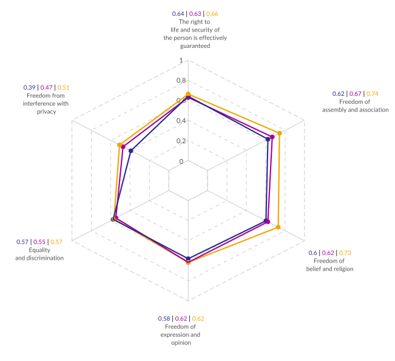
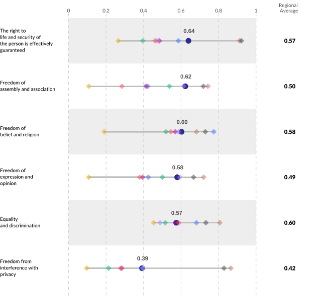
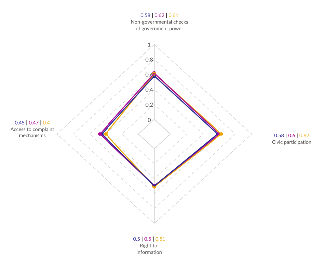
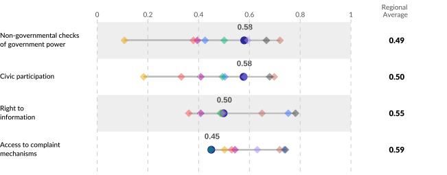
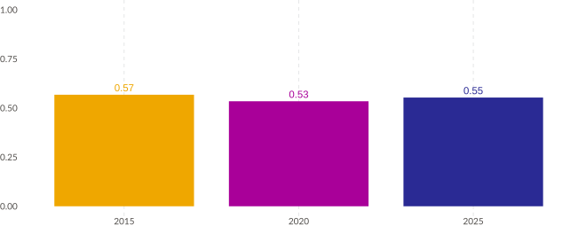
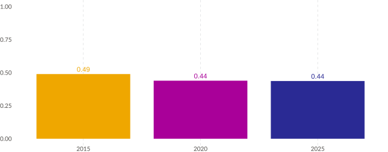
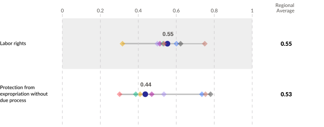
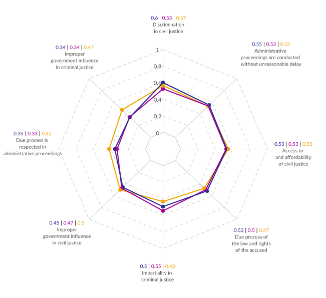
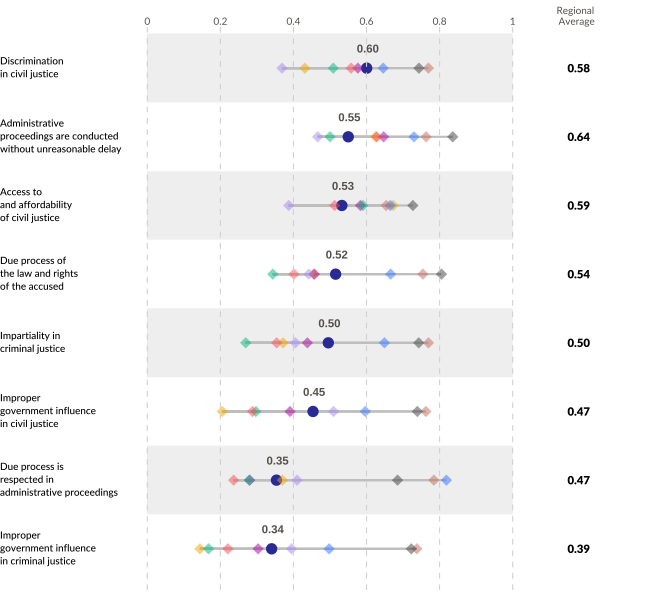

Human Rights in Mongolia:
Insights from the WJP Rule of Law Index® 2015 - 2025
Acknowledgements
Human Rights in Mongolia: Insights from the WJP Rule of Law Index® 2015 - 2025 was produced by the World Justice Project under the research oversight of Alejandro Ponce and the executive direction of Elizabeth Andersen.
Ana María Montoya and Santiago Pardo led the production of this report with assistance from Erin Campbell and Isabella Coddington. Alejandro Gonzalez and Srirak Piplat provided comments on the early drafts of this report.
The World Justice Project (WJP) Rule of Law Index® 2025 report was prepared by the World Justice Project. The Index’s conceptual framework and methodology were developed by Juan Carlos Botero, Mark David Agrast, and Alejandro Ponce. Data collection and analysis for the 2025 report was performed by Allison Bostrom, Erin Campbell, James Davis, Giacomo D’Urbano, Alicia Evangelides, Joshua Fuller, Lauren Littlejohn, Alejandro Ponce, Natalia Rodríguez Cajamarca, and Katrina Wanner, with the assistance of Lloyd Cleary, Adrian Feinberg, James Marculitis, Andrea Marín Núñez de Arce, Charlotte Mast, Zayna Tubeishat, and Holly West.
Mariana López was the graphic design lead for this report, with support from Enrique Paulin.
Cover was designed by Mariana López with images obtained from iStock.com.
© Copyright 2025 by the World Justice Project.
Requests to reproduce this document should be sent to:
Alejandro Ponce
World Justice Project
1025 Vermont Avenue NW, Suite 1200
Washington, DC 20005, USA
Email: aponce@worldjusticeproject.org
Washington, DC
1025 Vermont Avenue NW, Suite 1200
Washington, DC 20005 USA
P +1 (202) 407-9330
Mexico City
Gobernador José Guadalupe Covarrubias
57-20, San Miguel Chapultepec, 11850,
Miguel Hidalgo Mexico City
worldjusticeproject.mx


TABLE OF CONTENTS
EXECUTIVE SUMMARY
CHAPTER 1. RULE OF LAW INDEX IN MONGOLIA
Defining the Rule of Law
Conceptual Framework of the WJP Rule of Law Index
Rule of Law in Mongolia 2025
Rule of Law in East Asia and the Pacific From 2023 to 2025
CHAPTER 2. HUMAN RIGHTS IN MONGOLIA
CHAPTER 3: PROJECT DESIGN
Methodology
CHAPTER 4. DATA ANALYSIS
Section I: Civil and Political Rights
Section II: Participation and Access to Information
Section III: Labor and Property Rights
Section IV: Fair and Impartial Justice
CHAPTER 5. THE HUMAN RIGHTS SITUATION IN MONGOLIA AND THE REGION
Appendix
About the WJP
Other Publications
RULE OF LAW INDEX IN MONGOLIA
HUMAN RIGHTS IN MONGOLIA
HUMAN RIGHTS IN MONGOLIA
The WJP Rule of Law Index® encompasses a broad range of governance and legal metrics. In Chapter II, we focus specifically on sub-factors directly related to Mongolia's human rights landscape. This section introduces a conceptual framework that consolidates 20 sub-factors across four categories: Civil and Political Rights, Participation and Access to Information, Labor and Property Rights, and Fair and Impartial Justice. Rather than evaluating these insights within the Index's East Asia and Pacific regional grouping, this report presents a more relevant comparison of Mongolia's performance relative to its closest regional peers throughout Asia: China; Hong Kong SAR, China; Japan; Kazakhstan; Kyrgyz Republic; Nepal; Republic of Korea; and Uzbekistan. This approach offers an integrated overview of human rights in Mongolia, highlighting both persistent challenges and areas of improvement.
Conceptual Framework and Insights
The theoretical framework for this report is structured to assess Mongolia’s rule of law and human rights situation across four key domains: Civil and Political Rights, Participation and Access to Information, Labor and Property Rights, and Fair and Impartial Justice. Each domain includes sub-factors that illustrate the strengths and weaknesses of the country’s governance and legal systems, offering a comprehensive analysis of the extent to which fundamental rights and the rule of law are upheld. This framework allows for a nuanced understanding of Mongolia’s legal and institutional landscape, providing insight into both areas of progress and persistent challenges.

1. Civil and Political Rights.
Civil and Political Rights refer to the fundamental freedoms that protect individuals from undue state interference and enable active participation in social, cultural, and political life. These rights include freedom of expression, assembly, belief, and protection from unwarranted state intrusion, forming the bedrock of democratic governance and the rule of law.
-
Sub-factors assessed:
- Freedom of belief and religion
- Equality and discrimination
- Freedom of expression and opinion
- Freedom of assembly and association
- The right to life and security of the person is effectively guaranteed
- Freedom from interference with privacy
The sub-factors collectively aim to depict the degree of political freedom and civil rights enjoyed by citizens. Assessing these indicators provides insight into how well the legal framework supports individual liberties in practice.
-
Main Insights
In the past decade, Mongolia has seen improvements in the sub-factors measuring the right to life and security and equality and non-discrimination, returning both indicators' scores closer to their highest levels observed in the period. This increase in score situates Mongolia as the regional leader in the protection of life and personal security.
In contrast, the sub-factors measuring freedom of assembly and association, freedom of belief and religion, freedom of expression and opinion, and freedom from interference with privacy all have declined over the past decade. Even with these deteriorations, Mongolia remains among the strongest performers in the region, which suggests that the country has been able to mitigate the broader declines in civil and political freedoms observed across neighboring states. However, freedom from interference with privacy stands out as a key concern. Although Mongolia leads the region in this indicator, its score is low and has seen considerable, sustained declines over the past decade, signaling ongoing risks to personal autonomy and protection from state intrusion.
Highlights
- Mongolia leads the region in the right to life and security, reflecting stronger protection from violence and physical harm. Likewise, the country shows renewed progress in equality and non-discrimination, demonstrating progress in the effort to ensure more equitable treatment across sociodemographic groups.
- Despite downward trends, Mongolia remains a top performer regionally in the freedoms of expression, association, belief, and privacy, indicating resilience in core democratic liberties compared to its neighbors.
Challenges
- Freedom from interference with privacy stands out both as Mongolia's lowest-scoring Civil and Political Rights indicator and its sub-factor with the steepest decline in score over the past decade. This suggests growing tension between the state's security practices and its protection of personal autonomy.
- Declines in freedom of assembly and association, freedom of belief and religion, and freedom of expression and opinion indicate sustained pressures on civic and political participation.
- To sustain recent gains in equality while preventing further erosion in expressive and associational freedoms, Mongolia will need to reinforce legal safeguards, oversight mechanisms, and accountability for restrictions imposed by state institutions.
2. Participation and Access to Information.
Participation and Access to Information encompasses the mechanisms that allow citizens to participate in public life and engage in civil society activities. This concept underscores the importance of transparency, open communication, and institutional responsiveness, ensuring that the government's actions align with the rule of law and respect individual rights.
-
Sub-factors assessed:
- Access to complaint mechanisms
- Non-governmental checks of government power
- Civic participation
- Right to information
These sub-factors gauge the extent to which citizens can access information regarding government policies and whether accountability mechanisms exist outside the formal structures of government. This domain provides a measure of how open and responsive the state is to public participation and scrutiny.
-
Main Insights
Over the last decade, most indicators under Participation and Access to Information have deteriorated in Mongolia, with declines accelerating in the past five years. As these indicators reflect the ability of citizens to engage in public life, monitor government actions, seek information, and pursue formal complaints, these decreases point toward an erosion of channels for public participation and government oversight. The only indicator that has improved in Mongolia since 2015 is the sub-factor measuring access to complaint mechanisms, but, despite this increase, it remains the lowest-scoring indicator in this category.
Regionally, Mongolia's Participation and Access to Information performance is varied. In 2025, the country ranks among the highest performers in non-governmental checks of government power and civic participation, reflecting an environment where citizens and civil society actors continue to engage in public life and monitor state activity at greater levels than their regional peers. At the same time, Mongolia falls below the regional average in right to information and access to complaint mechanisms, which suggests that the ability to obtain government information or pursue formal redress remains limited. This gap indicates that public voice and organization do not consistently translate into access to information or effective institutional response.
Highlights
- Mongolia is among the strongest performers in the region in non-governmental checks of government power and civic participation, indicating continued space for civil society, media, and citizens to engage in public affairs.
- Access to complaint mechanisms has improved over the decade, showing progress in the availability of formal channels to report grievances and seek redress.
Challenges
- Declines across most indicators suggest reduced opportunities for citizens to influence public decisions and monitor government action.
- Mongolia scores below the regional average in right to information and access to complaint mechanisms, indicating persistent barriers to accessing government information and securing formal remedies.
3. Labor and Property Rights.
Labor and Property Rights focus on ensuring that all individuals, regardless of socioeconomic status or background, have access to fundamental labor rights and protection from expropriation of property.
-
Sub-factors assessed:
- Labor rights
- Protection from expropriation without due process
These sub-factors assess whether fundamental labor rights are effectively guaranteed and whether the government respects the property rights of individuals and companies. This domain provides an indication of the health and integrity of the labor system and the mechanisms through which the government expropriates.
-
Main Insights
Over the past decade, both indicators under Labor and Property Rights have declined. However, Mongolia's labor rights score has seen a recovery in the last five years (+3.5%), bringing the country closer to the region's strongest performers. Mongolia ranks among its highest-scoring regional peers in labor rights, positioned only behind Hong Kong, Republic of Korea, and Japan. In contrast, protection from expropriation without due process has not improved in the same period and remains below the regional average, placing Mongolia ahead of only Uzbekistan, China, and the Kyrgyz Republic. This contrast suggests that, compared to neighboring countries, Mongolia enjoys stronger guarantees in workplace rights and conditions than in the legal protections that govern property and due process.
Highlights
- Mongolia ranks among the highest performers in the region in labor rights, reflecting stronger protections for workers in terms of fair treatment, safe working conditions, and the ability to organize.
- The country's improvement in labor rights in the last five years indicates momentum toward strengthening the enforcement of labor standards.
Challenges
- Protection from expropriation without due process remains below the regional average, signaling limited safeguards for property owners when government intervention occurs.
- The lack of improvement in this indicator over the past five years suggests persistent gaps in legal clarity, appeal mechanisms, and compensation guarantees in expropriation cases.
4. Fair and Impartial Justice
Fair and Impartial Justice encompasses the integrity of the justice system in general, including the due process of the law, freedom from influences on civil and criminal justice, impartiality, and freedom from discrimination in matters of justice, with a focus on ensuring that all individuals, regardless of their background, have the right to seek legal redress through fair, impartial, and transparent judicial processes. This domain emphasizes the principles of legal equality, non-discrimination, and judicial independence in delivering justice.
-
Sub-factors assessed:
- Access to and affordability of civil justice
- Improper government influence in criminal justice
- Discrimination in civil justice
- Improper government influence in civil justice
- Administrative proceedings are conducted without unreasonable delay
- Due process of the law and rights of the accused
- Impartiality in criminal justice
- Due process is respected in administrative proceedings
-
Main Insights
Over the past five years, discrimination in civil justice has improved in Mongolia, achieving its highest score in a ten-year period and ranking among the strongest in the region in 2025. In contrast, impartiality in criminal justice has declined over the same timeframe (-9.3% since 2020), reflecting a diverging pattern in which equality and fairness have strengthened in the civil system while deteriorating in the criminal system.
In relation to administrative justice, the sub-factor measuring unreasonable delays in administrative proceedings has improved, suggesting greater efficiency in Mongolia's case processing. However, the indicator on due process in administrative proceedings has declined, pointing toward widening gaps in procedural fairness and the safeguards that ensure individuals can effectively challenge administrative decisions.
Mongolia's most persistent justice challenges relate to improper government influence in both the civil and criminal systems. The country's scores for these two indicators, which have steadily eroded since 2015, both reached their lowest levels in 2025. While this trend highlights growing concerns regarding judicial independence, it also reflects a broader regional pattern: with the exception of the Republic of Korea and Japan, most countries in the region score low on this dimension.
Highlights
- In 2025, Mongolia's score for discrimination in civil justice surpassed the global average, placing the country 32nd globally and positioning it among the region's strongest performers on this measure.
- Improvements in score for the sub-factor measuring delays in administrative proceedings reflect positive progress in administrative efficiency.
Challenges
- Improper government influence in both civil and criminal justice remains a major weakness, with both sub-factors reaching their lowest scores in 2025.
- Mongolia's deterioration in due process in administrative proceedings highlights growing challenges in procedural safeguards.
- Weakening impartiality in criminal justice suggests concerns about bias and unequal treatment within the criminal justice system.
CHAPTER 3. PROJECT DESIGN
CHAPTER 4. DATA INTERPRETATION AND ANALYSIS
HUMAN RIGHTS IN MONGOLIA
SECTION I
CIVIL AND POLITICAL RIGHTS
CIVIL AND POLITICAL RIGHTS
Civil and Political Rights encompass the fundamental freedoms and rights that protect individuals from undue interference by the state and enable them to participate actively in the social, cultural, and political life of their society. These rights include the ability to express opinions, practice religion freely, participate in peaceful assemblies, and maintain privacy. Recognized under various international human rights instruments, such as the Universal Declaration of Human Rights and the International Covenant on Civil and Political Rights, these liberties form the cornerstone of democratic governance and the rule of law.
To provide an overview of Mongolia's performance in terms of Civil and Political Rights, we gather the following sub-factors which help us to better understand the realization of these rights:
Freedom of belief and religion
This sub-factor focuses on the right of individuals to practice, change, or abandon their religion or beliefs without coercion. It evaluates the legal and social protections in place for diverse religious practices and beliefs and the extent to which individuals are free from discrimination or state control in their religious observances.
Equality and discrimination
This element focuses on the legal framework's effectiveness in ensuring that all individuals are treated equally under the law, regardless of their identity or status. It examines the presence of legal protections against discrimination and the extent to which these protections are applied consistently across all cases, fostering a justice system that respects and upholds the principle of equality. This sub-factor takes into account the following sociodemographic characteristics:
- Socioeconomic status
- Gender
- Ethnicity
- Religion
- Foreign nationality
- Sexual orientation
Freedom of expression and opinion
This indicator gauges the degree to which individuals can freely express their opinions, criticize government policies, and engage in public discourse without fear of censorship or retaliation. It considers the freedoms of the press, media, and individual speech, emphasizing the ability to communicate diverse viewpoints openly. This indicator measures the following topics:
- People are free to express political opinions alone or in peaceful association with others.
- Freedom of the media is respected.
- Freedom of civil and political organization is respected.
Freedom of assembly and association
This sub-factor assesses the extent to which individuals can freely gather in peaceful assemblies and form or join associations, including civil society organizations, unions, and political parties. It measures the ability of people to mobilize collectively for a cause or to express shared interests without facing harassment or interference from the state.
The right to life and security of the person is effectively guaranteed
This sub-factor measures the extent to which the state provides protections against threats to physical security and life, both in and outside the workplace. It examines whether the government ensures safety regulations and mechanisms to protect workers from hazardous conditions and whether individuals are safeguarded against violence or abuse. It emphasizes the right to work in environments that do not pose risks to health and safety.
Freedom from interference with privacy
This dimension assesses the protection of individuals from unwarranted surveillance or intrusions into their private lives by the state. It includes protections against unlawful searches, wiretapping, and monitoring of personal communications. The sub-factor measures the ability of individuals to enjoy personal privacy in their homes and communication without undue governmental interference.
CHART 1.1.
Civil and Political Rights in Mongolia Over the Last Decade
The chart ranges from 0 to 1, where 1 signifies the highest possible score and 0 signifies the lowest possible score.
2025 2020 2015

In 2025, Mongolia improved its scores in the sub-factors measuring the right to life and security and equality and non-discrimination, after both indicators declined between 2015 and 2020. These increases return Mongolia's performance in these areas closer to their highest levels in the past decade. In contrast, Mongolia's scores for the indicators on freedom of assembly and association, freedom of belief and religion, freedom of expression and opinion, and freedom from interference with privacy have reached their lowest levels in a ten-year period. Mongolia's largest declines are in freedom of assembly and association (-16.1% since 2015), freedom of belief and religion (-17.4%), and freedom from interference with privacy (-23.0%). The erosion in freedom from interference with privacy is especially concerning, as it represents Mongolia's lowest score among all Civil and Political Rights indicators during the decade.
Source: WJP Rule of Law Index 2015, 2020, and 2025
CHART 1.2.
Civil and Political Rights Among Regional Peers
The chart ranges from 0 to 1, where 1 signifies the highest possible score and 0 signifies the lowest possible score.
Mongolia ◆ Nepal ◆ Hong Kong ◆ Kazakhstan ◆ Uzbekistan ◆ Kyrgyz Republic ◆ Korea, Rep. ◆ China ◆ Japan

Mongolia generally outperforms its regional peers in the Civil and Political Rights category. The country ranks among the top performers in the sub-factors measuring the right to life and security, freedom of assembly and association, freedom of belief and religion, and freedom of expression and opinion, exceeding regional averages in each indicator. However, despite Mongolia's higher ranking in privacy guarantees, the country's score remains low and falls below the regional average; rather than demonstrating Mongolia's relative strength in this indicator, these results reflect a broader regional challenge with government interference.
Source: WJP Rule of Law Index 2025
HUMAN RIGHTS IN MONGOLIA
SECTION II
PARTICIPATION AND ACCESS TO INFORMATION
PARTICIPATION AND ACCESS TO INFORMATION
Participation and Access to Information refers to the mechanisms and environment that allow citizens to participate in public affairs, engage in civil society activities, and access government information. This category emphasizes the importance of transparency, open communication, and institutional responsiveness, ensuring that the actions of those in power align with the rule of law and respect the rights and interests of individuals.
The following sub-factors provide a comprehensive measure of this concept in practice:
Access to complaint mechanisms
This sub-factor assesses the availability and effectiveness of formal processes through which individuals can report grievances and seek redress against government actions or decisions. It includes mechanisms such as ombudsman offices, human rights commissions, and other complaint channels that provide a structured way for citizens to voice concerns and hold officials accountable.
Non-governmental checks of government power
This sub-factor examines the role of non-governmental entities, such as civil society organizations, media, and independent watchdogs, in monitoring and influencing government actions. It considers the extent to which these actors can freely scrutinize government behavior, report misconduct, and demand transparency without facing undue pressure or retaliation. This ensures that power is balanced and that there are effective mechanisms outside of formal government structures to prevent abuse. This indicator comprises of the following topics:
- People are free to express political opinions alone or in peaceful association with others
- Freedom of the media is respected
- Freedom of civil and political organization is respected
Civic participation
This indicator focuses on the capacity of citizens to actively engage in public life, including through voting, participating in political discussions, and contributing to policy-making processes. It highlights the opportunities available for individuals to influence decisions that affect their lives, ensuring that government remains responsive to the needs and concerns of the community. This concept is measured considering the following dimensions:
- Freedom of opinion and expression is effectively guaranteed
- Freedom of assembly and association is effectively guaranteed
- Right to petition and civic engagement
- Complaint mechanisms
Right to information
This aspect examines the extent to which individuals can access information held by the government, including data on policies, budgets, and public activities. It emphasizes transparency in governance by ensuring that citizens have the right to seek, receive, and impart information about governmental actions. This indicator assesses various outcomes related to information requests, including:
- Responsiveness of government agencies
- Quality of information
- Timeliness
- Affordability and trust
- General accessibility of information
CHART 2.1.
Participation and Access to Information in Mongolia Over the Last Decade
The chart ranges from 0 to 1, where 1 signifies the highest possible score and 0 signifies the lowest possible score.
2025 2020 2015

Over the past decade, Mongolia's scores in almost all indicators under Participation and Access to Information have declined, with an acceleration in this deterioration having occurred in the last five years. Compared to its performance in 2015, Mongolia saw its greatest decreases in score in the sub-factors measuring non-governmental checks of government power (-5.1%) and civic participation (-7.7%). Access to complaint mechanisms provides an exception to this negative trend, as Mongolia's score increased over the decade (+12.4% since 2015); although it remains the lowest-scoring sub-factor in this category, it is the only indicator in which Mongolia has seen sustained improvement.
Source: WJP Rule of Law Index 2015, 2020, and 2025
CHART 2.2.
Participation and Access to Information Among Regional Peers
The chart ranges from 0 to 1, where 1 signifies the highest possible score and 0 signifies the lowest possible score.
Mongolia ◆ Nepal ◆ Hong Kong ◆ Kazakhstan ◆ Uzbekistan ◆ Kyrgyz Republic ◆ Korea, Rep. ◆ China ◆ Japan

Compared to regional peers, Mongolia's performance in Participation and Access to Information is mixed. The country ranks among the top performers in non-governmental checks of government power and civic participation, positioned behind Republic of Korea and Japan, and comparable to Nepal. However, Mongolia scores below the regional average in right to information and access to complaint mechanisms, reflecting the country's relative weakness in ensuring individuals' access to public information and channels to pursue formal redress.
Source: WJP Rule of Law Index 2025
HUMAN RIGHTS IN MONGOLIA
SECTION III
LABOR AND PROPERTY RIGHTS
LABOR AND PROPERTY RIGHTS
Labor and Property Rights refer to the standards and safeguards that ensure workers are treated with dignity and fairness, and that social systems are in place to protect individuals' well-being and security. This concept highlights the importance of fair treatment in the workplace, access to due process in disputes, and the assurance of basic human rights. It is essential for creating a just society where economic and social rights are respected and upheld.
To assess Labor and Property Rights in Mongolia, we include the two following key sub-factors that illustrate the practical application of this concept:
Labor rights
This sub-factor evaluates the protection of fundamental labor rights, including the rights to fair wages, safe working conditions, freedom from forced labor, and the ability to organize and join labor unions. It considers the extent to which labor regulations are enforced and whether workers can freely exercise their rights without fear of retaliation or discrimination, thereby ensuring dignity and fairness in the workplace. This sub-factor captures the following concepts:
- Equal payment and absence of discrimination
- Freedom to form unions and bargain collectively
- Prohibition of child and forced labor
Protection from expropriation without due process
This indicator evaluates whether the government respects legal procedures when expropriating property, including property that is essential for individuals' livelihoods, such as land or businesses. It considers whether expropriation is conducted transparently with opportunities for appeal and adequate compensation. This ensures that individuals' economic rights are protected and that any state intervention in property matters is lawful and fair. This indicator is measured with respect to the following topics:
- Property rights for the people
- Property rights for companies
CHART 3.1.
Labor and Property Rights in Mongolia Over the Last Decade
The chart ranges from 0 to 1, where 1 signifies the highest possible score and 0 signifies the lowest possible score.
| Labor rights

| Protection from expropriation without due process

Over the past decade, both indicators under Labor and Property Rights have declined. However, Mongolia's labor rights score has shown some recovery in the last five years (+3.5%), while protection from expropriation without due process remained stagnant during this period.
Source: WJP Rule of Law Index 2015, 2020, and 2025
CHART 3.2.
Labor and Property Rights Among Regional Peers
The chart ranges from 0 to 1, where 1 signifies the highest possible score and 0 signifies the lowest possible score.
Mongolia ◆ Nepal ◆ Hong Kong ◆ Kazakhstan ◆ Uzbekistan ◆ Kyrgyz Republic ◆ Korea, Rep. ◆ China ◆ Japan

Mongolia's labor rights score matches the regional average and places the country among the region's top performers, positioned only behind Hong Kong, Republic of Korea, and Japan. In contrast, Mongolia scores below the regional average in the sub-factor measuring protection from expropriation without due process, only outperforming Uzbekistan, China, and the Kyrgyz Republic.
Source: WJP Rule of Law Index 2025
HUMAN RIGHTS IN MONGOLIA
SECTION IV
FAIR AND IMPARTIAL JUSTICE
FAIR AND IMPARTIAL JUSTICE
Fair and Impartial Justice refers to the principles that ensure all individuals, regardless of their background or status, have the right to seek and obtain legal redress through a fair, impartial, and transparent judicial process. This concept emphasizes the importance of legal equality, the absence of discrimination, and the independence of the judiciary in delivering justice.
To assess Fair and Impartial justice in Mongolia, we include the following key sub-factors that illustrate how this concept operates in practice:
Discrimination in civil justice
This sub-factor examines whether the civil justice system discriminates against certain groups based on factors like race, gender, socioeconomic status, or other characteristics. It evaluates whether all individuals have equal access to legal remedies and whether civil cases are adjudicated fairly without bias or preferential treatment.
Administrative proceedings are conducted without unreasonable delay
This indicator measures the time judges take to reach a decision, from the moment a case is filed to the point when a verdict or settlement is achieved. It also assesses the time required by workers to enforce that decision. Additionally, it evaluates the frequency of delays in administrative proceedings at both national and local levels, particularly those without clear justification.
Access to and affordability of civil justice
This aspect evaluates how easily individuals can access civil courts to resolve disputes, including considerations of legal costs and the availability of legal aid. It emphasizes the importance of ensuring that financial barriers do not prevent individuals from seeking justice, thereby promoting an inclusive justice system where all members of society can resolve civil matters effectively. This sub-factor is measured considering the following dimensions:
- People are aware of available remedies
- People can access and afford legal advice and representation
- Procedures
- Accessibility of courts
- Costs (courts, lawyers and procedures)
Due process of the law and rights of the accused
This sub-factor evaluates the extent to which individuals are guaranteed a fair trial, legal representation, and the presumption of innocence until proven guilty. It also considers whether the judicial process respects the rights of those accused of crimes, ensuring transparency, timeliness, and access to evidence. This ensures that legal procedures protect the fundamental rights of individuals and maintain fairness throughout the legal process. This indicator is composed of the following concepts:
- Presumption of innocence
- Arrest and pre-trial detention
- Torture and abusive treatment to suspects
- Legal assistance
- Rights of prisoners
Impartiality in criminal justice
This sub-factor measures the extent to which the criminal justice system is free from bias or prejudice. It considers whether judges, juries, and prosecutors treat individuals equally, without favoritism or discrimination, ensuring that criminal proceedings are conducted fairly for all parties involved. This dimension is measured considering the following actors:
- Police is impartial and does not discriminate
- Judges are impartial and do not discriminate
Improper government influence in civil justice
This element measures the independence of the civil justice system, specifically examining whether government officials exert undue influence over civil court decisions. It considers whether judges and other judicial actors can make decisions based solely on the law and evidence, free from external pressures or political interests.
Due process is respected in administrative proceedings
This element assesses the procedural fairness in administrative matters, including those that affect labor rights, environmental protections, and taxation. It considers whether individuals have the right to a fair hearing, access to evidence, and the ability to appeal decisions. This ensures that regulatory processes protect individuals' rights and maintain transparency and justice in administrative cases.
Improper government influence in criminal justice
This sub-factor assesses whether the criminal justice system operates independently from the influence of government authorities. It examines the extent to which the judiciary, prosecutors, and law enforcement can carry out their roles without interference, ensuring that criminal cases are resolved based on legal standards rather than political considerations.
CHART 4.1.
Fair and Impartial Justice in Mongolia Over the Last Decade
The chart ranges from 0 to 1, where 1 signifies the highest possible score and 0 signifies the lowest possible score.
2025 2020 2015

Mongolia's civil justice system demonstrates strengths in the sub-factors measuring discrimination in civil courts and unreasonable delays in administrative proceedings, both of which peaked in score in 2025. Access to and affordability of civil justice has deteriorated in the past decade (-3.2% since 2015) but the sub-factor's score has remained stable in the last five years. In contrast, the indicators on improper government influence in civil justice and due process in administrative proceedings have sustained ongoing declines throughout the past decade (-8.6% and -15.6% since 2015, respectively).
Criminal justice represents a relative weakness for Mongolia, compared to its performance in areas of civil justice. The sub-factor measuring due process of law and rights of the accused is the only dimension of criminal justice that has seen steady improvement throughout the past decade, reaching its highest levels in 2025. Mongolia's score for impartiality in criminal courts is higher than it was in 2015, but the indicator has weakened since its peak in 2020 (-9.3%). Improper government influence in criminal justice remains a major concern for the country, as this sub-factor represents Mongolia's worst performance in the Fair and Impartial Justice category in 2025 and its indicator with the greatest percentage decline since 2015 (-27.0%).
Source: WJP Rule of Law Index 2015, 2020, and 2025
CHART 4.2.
Fair and Impartial Justice Among Regional Peers
The chart ranges from 0 to 1, where 1 signifies the highest possible score and 0 signifies the lowest possible score.
Mongolia ◆ Nepal ◆ Hong Kong ◆ Kazakhstan ◆ Uzbekistan ◆ Kyrgyz Republic ◆ Korea, Rep. ◆ China ◆ Japan

Mongolia's performance in Fair and Impartial Justice generally falls below peer averages, though it ranks in the middle of the regional distribution. The only exception is seen in the country's relatively high score for the indicator on discrimination in civil justice, which places Mongolia behind only Japan, Republic of Korea, and Hong Kong in rank. Mongolia's lowest-scoring sub-factor, which measures improper government influence in criminal justice, also represents a challenge for its neighboring countries—as the regional average for this indicator falls below all other aspects of Fair and Impartial Justice, Mongolia's low score is situated within a broader, regional struggle with government overreach in criminal affairs.
Source: WJP Rule of Law Index 2025
CHAPTER 5: THE HUMAN RIGHTS SITUATION IN MONGOLIA AND THE REGION
THE HUMAN RIGHTS SITUATION IN MONGOLIA AND THE REGION
Given Mongolia’s complex history of political activism, military interventions, and legal reforms, this report examines the impact of the past decade’s changes on civil and political rights and the broader human rights landscape. The 2025 WJP Rule of Law Index highlights Mongolia’s mixed performance in human rights within the region, reflecting both significant challenges and opportunities for reform.
Firstly, declines in civil and political rights, including freedom of assembly, equality, and the right to life, underscore ongoing risks to individual liberties. Similarly, reductions in civic participation and access to information reveal growing barriers to civic engagement. Secondly, systemic issues in labor rights enforcement and administrative proceedings remain critical obstacles. Thirdly, despite these setbacks, Mongolia has achieved incremental improvements in areas such as freedom of belief and religion and has made progress in civil justice, particularly in reducing discrimination and improving affordability.
The map and table below present the average scores of these 20 indicators across the region, highlighting shifts over the last five years and in the most recent year. This period marked a pivotal moment for Mongolia’s rule of law performance.

The figure above illustrates regional trends in the rule of law and human rights performance over the past decade. As of 2025, Mongolia scored 0.47, ranking fourth in the region. This represents a 4% decline over the past decade and a 3% decline over the last five years, which limits Mongolia’s prospects of becoming the top-ranked country in human rights indicators. However, Mongolia’s decade-long decline of -4% is less severe than that of the Kyrgyz Republic (-16%), Nepal (-21%), and Uzbekistan (-30%). Over the last five years, Mongolia’s decline of -3% also compares favorably or equally to other regional counterparts, such as the Kyrgyz Republic (-3%), Nepal (-8%), and Uzbekistan (-30%). These trends suggest that Mongolia maintains a relatively stable, though mid-range, position in a region characterized by significant volatility in human rights and government performance.
Despite its transition from years of military influence to a more democratic structure, Mongolia continues to face substantial challenges. Nevertheless, the recent improvement in its score (+2%) may signal the beginning of a positive trend, offering hope for further advancements in the human rights landscape. However, achieving substantial progress remains difficult due to the country’s complex political dynamics, legal framework, and ongoing conflicts.
Regionally, Mongolia ranks fourth among comparison countries for human rights indicators, outperforming Nepal and Uzbekistan but trailing Republic of Korea, Hong Kong SAR, China, and Kazakhstan. While the region faces significant declines in human rights protections, Mongolia’s relative stability and progress in specific sub-factors position it as a potential leader for reform. To build on its advancements and address persistent challenges, Mongolia must strengthen democratic institutions, safeguard civil liberties, and foster regional cooperation to uphold and advance human rights standards.
APPENDIX

ABOUT THE WORLD JUSTICE PROJECT
The World Justice Project (WJP) is an independent, multidisciplinary organization working to create knowledge, build awareness, and stimulate action to advance the rule of law worldwide. Effective rule of law is the foundation for communities of justice, opportunity, and peace–underpinning development, accountable government, and respect for fundamental rights.
The WJP builds and supports a global, multidisciplinary movement for the rule of law through three lines of work: collecting, organizing, and analyzing original, independent rule of law data, including the World Justice Project Rule of Law Index; supporting research, scholarship, and teaching about the importance of the rule of law, its relationship to development, and effective strategies to strengthen it; and connecting and building an engaged global network of policymakers and advocates to advance the rule of law through strategic partnerships, convenings, coordinated advocacy, and support for locally led initiatives.
Learn more at: worldjusticeproject.org.